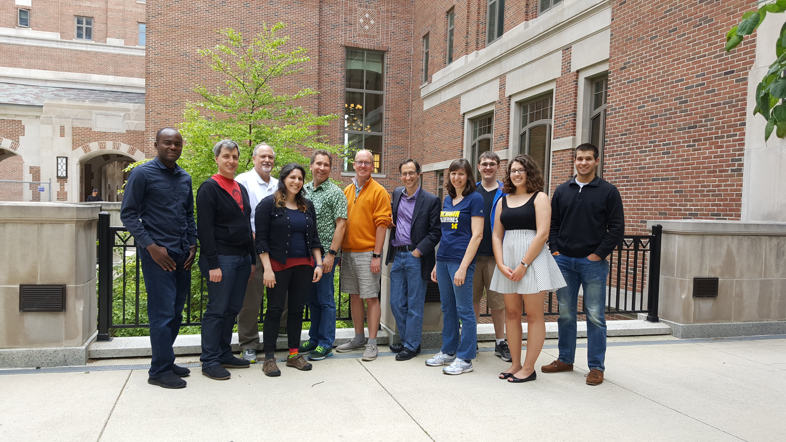

Back in March I had the following conversation with my friend Paul Resnick. “Should we organize a hack-week for runestone?” Paul asked. “Uhmmm sure,” I said wondering to myself who would come? Not that I lacked enthusiasm for the idea, after all what could be better than a week of hacking on Runestone even if it was just Paul and I? It would be even better if you had 14 people show up and you spent 5 days immersed in design, planning, strategizing, writing up articles, and oh yeah, coding, or in my case accepting pull requests from others!
 Pictured: Kesiena Owho-Ovuakporie, Jeff Rick, Chuck Severance, Jackie Cohen, Mark Guzdial, Brad Miller, Paul Resnick, Barbara Ericson, Devin Hanggi, Lauren Murphy, Kyle Miller
So, here is a quick report on the first (annual?) Runestone The Gathering, held on the campus of the University of Michigan’s School of Information. It was a great way to kick off the summer research program for myself and two students Devin and Kyle.
User Facing Changes
For all of the instructors that have been waiting for a better way to manage two or more courses, and the students who have enrolled in two or more courses we now have a way for you to manage your courses! It’s done, PR accepted and will be live in the next week or so.
We have completely redesigned the rest of the instructor's interface as well. It will soon be possible to add additional instructors/TAs to your course, create and publish assignments, add activities to a database of shared activites, and more. On top of that we have a new unified grading interface that I think is much more intuitive and will work for grading activecode as well as multiple choice, fill-in-the-blank, parsons, and other kinds of activities. Whether you use the assignment building interface or not, you will have one place to grade.

In addition we spent some time adding automated test cases (unittests) for a whole bunch of the programming exercises at the end of each chapter of the thinkcspy book. Now students can work on the code, run it, and see whether it is meeting expectations immediately. Parson's problems have also been hugely improved in preparation for one of Barb's PhD research projects.

For Developers and Authors
We spent a lot of time talking about how we communicate to our teachers, students, and fellow developers. Its not easy, things evolve over time, and sometimes something seems obvious to me or someone else close to the project that is not so obvious to someone new. So we are reorganizing our documentation and trying to make it easier to find the information you need. One important distinction to make clear right away is the difference between runestoneinteractive.org and interactivepython.org. It is clear that interactivepython.org is an increasingly inaccurate name for a site that hosts interactive books for Python, Java, Javascript, and HTML. It will take a while to migrate domain names, but interactivepython.org will be mostly a site for hosting books. All other stuff will live on the project website runestoneinteractive.org.
Speaking of authors and developers, we need help with tasks requiring almost every skill level. If you can help us write documentation, fix simple bugs or if you would like to jump in and help implement some new runestone components, we would welcome your help.
For the Future
The future here looks bright!
We spent a good amount of time talking about how to fund Runestone into the future. The use of runestone has grown from 30 students in one section at Luther college to over 13,000 students each day from over 500 institutions around the world. Donations, at the rate we get them today are not going to be enough to sustain us. In the next year we’ll be writing grants and looking for funding to expand our ability to offer training and to scale our servers from several sources.
We talked a bit about the future of writing in the runestone system. Apparently restructuredText is not everyone's favorite markup language. But there are alternatives, such as using the raw web components in markdown or in a wiki language, and this seems to be a good direction for further development. Our goal is to make it possible to use the components in many different forms of writing in whatever organization makes sense.
We also spent time with Dr. Chuck investigating how to make Runestone interact with learning management systems (LMS). The LTI standard doesn't let us do everything we would like now, for all LMSs, but it is a growing and maturing standard and seems worth our efforts to do what we can to make it easy to exchange, both grades and assignments with systems like Sakai, Moodle, and Canvas.
Fun and Community Building
We also spent some time having fun, including kayaking on the Huron River, a singalong, with Ukulele, guitar, and fiddle, and some great eats. Indian, Italian, Korean Barbecue, and Ethiopian.

The picture above shows Brad Miller (Luther College) on guitar, Paul Resnick (University of Michigan) on fiddle, and Mark Guzdial (Georgia Tech) on ukulele. In all we had people in attendance from four universities around the country. The week was a great opportunity to get to know others interested in working on Runestone. We’ll do it again next year; maybe bigger, maybe better, but there's only one first. Thanks to all who participated this year!
Comments
comments powered by Disqus